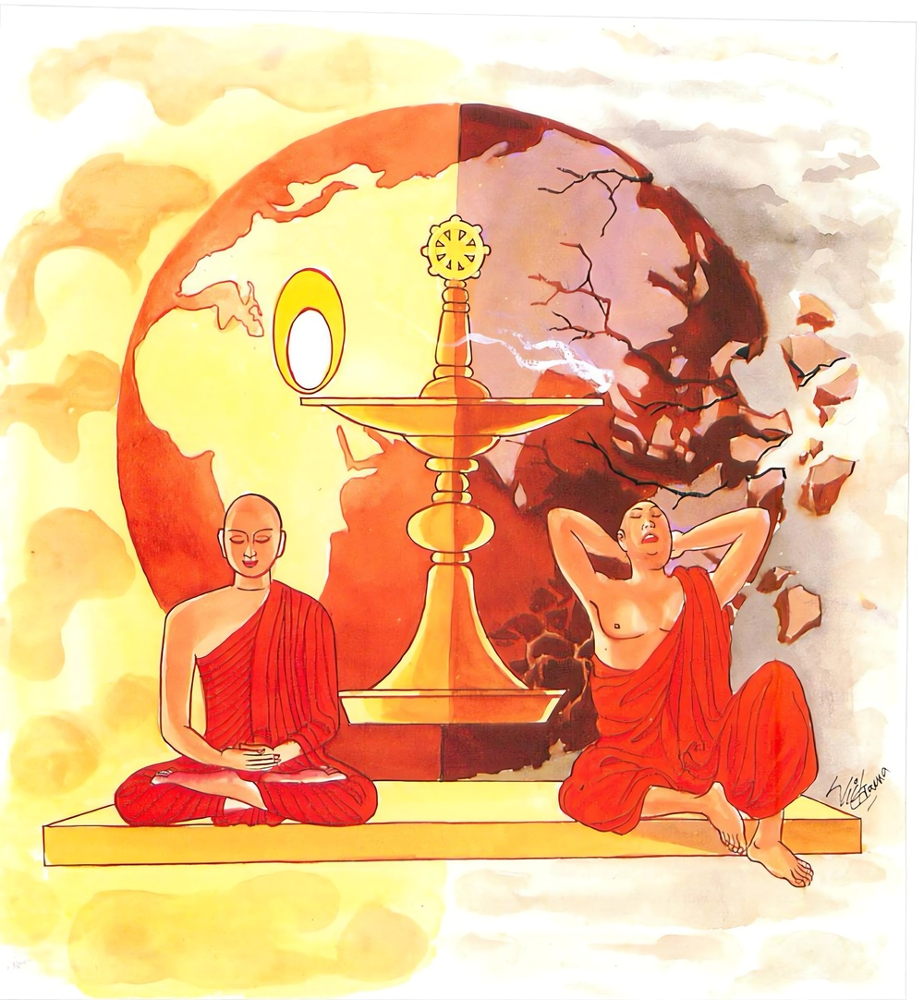

20-7 පොඨිල ස්ථවිරයන් වහන්සේ
මෙම කතාව ධම්මපද අටුවාවෙන් ද කියවන්න.
යොගා වෙ ජායතී භූරි අයොගා භූරිසඞ්ඛයො
එතං ද්වෙධා පථං ඤත්වා භවාය විභවාය ච
තථත්තානං නිවෙසෙය්ය යථා භූරි පවඩ්ඪති.
(පඨවිකසිණාදී අටතිස් අරමුණෙහි යෝනිසෝමනසිකාරයෙහි) යෙදීමෙන් ලොවුතුරා නුවණ ඒකාන්තයෙන් උපදී. ඒ භාවනාමනසිකාරයෙහි නොයෙදීමෙන් (ලොවීලොවුතුරා) ප්රඥාවගේ විනාශය වේ. වැඩ පිණිස ද අවැඩ පිණිස ද පවත්නා වූ යෝගය ද අයෝගය ද යන මේ දෙමඟ දැන, යම් සේ ප්රඥාව වැඩේ නම්; එ සේ තමා (යෝනිසෝමනසිකාරයෙහි) පිහිටුවන්නේ ය.

පොඨිල ස්ථවිරයන් වහන්සේ පිළිවෙළින් විදර්ශී ආදී වූ බුදු රජුන් සත් දෙනකුන් වහන්සේගේ සසුන්හි පිළිවෙළින් පැවිදි ව තෙවළාදර ව පන් සියයක් දෙනා වහන්සේට දහම් කියවූහ. අප බුදුරජුන් දවස උන්වහන්සේ එක් දවසක් “මේ මහණහුට අන්හට පිහිට වීමෙහි අදහසක් මුත් තමන්ට පිහිටක් කර ගැණීමෙහි සිතුවිල්ලෙක් නැත්තේ ය, එහෙයින් මොහු සංවේගයට පමුණු වන්නෙමි”යි සිතා පොඨිල තෙරුන්, තමන් වහන්සේට උපස්ථානයට පැමිණි කල්හි “තුච්ඡ පොඨිල! එව, තුච්ඡ පොඨිල! වඳුව තුච්ඡ පොඨිල! හිඳුව, තුච්ඡ පොඨිල! යව”යි වදාරණ සේක. ඔහු එතැනින් නැගී ගිය කල්හිත් “තුච්ඡ පොඨිල ගියේ ය”යි වදාරණ සේක.
එකල්හි පොඨිල ස්ථවිර තෙමේ “මම අර්ත්ථකථා සහිත ත්රිපිටක ධර්මය දරන්නෙක්මි, භික්ෂූන් පන් සියයක් අටළොස් වගක් කොට ඔවුනට තෙවළා දහම් කියවමි, එහෙත් බුදුරජානන් වහන්සේ මට නිතර තුච්ඡ පොඨිල, තුච්ඡ පොඨිල,යි වදාරණ සේක, මා ලැබූ ධ්යානාදිගුණවිශේෂයක් නොමැති බැවින් උන් වහන්සේ මා මෙසේ අමතන සේක් වනැ”යි උපන් සංවේග ඇතියේ “මම දැන් වන වැද මහණදම් කරන්නෙමි”යි තෙමේ ම කාටත් නො දන්වා පාසිවුරු පිළියෙල කොට ගෙණ ඉතා අලුයම සියල්ලනට පසුව බණ උගෙණ යන මහණහු හා කැටුව එතැනින් නික්ම ගියේ ය. පිරිවෙණෙහි හිඳ බණ දහම් හදාරණ මහණෝත් ඔහු ඇදුරු ය යි නො සැලකූහ. පොඨිල ස්ථවිර තෙමේ ද වන සෙනසුනෙක වසන භික්ෂූන් තිස් දෙනකුන් වෙත එළඹ සඞ්ඝ ස්ථවිරයන් වහන්සේ වැඳ “ස්වාමීනි! මට පිහිටවනු මැනැවැ”යි කියා සිටියේ ය. “ඇවැත්නි! ඔබවහන්සේ තෙවළාදරයහු, ධර්ම කථික වහු, අප ද ඔබවහන්සේගේ ඇසුරෙන් යම් කිසිවක් දතයුතුව ඇත, කුමක් නිසා මෙසේ කියහු දැ”යි උන්වහන්සේ ඇසූ කල්හි “ස්වාමීනි! එසේ නො කියනු මැනැවැ”යි නැවැතත් දන්වා සිටියේ ය. මේ වන සෙනසුනෙහි වුසූ හැම දෙනා වහන්සේ රහතුන් වහන්සේ ය.
එකල්හි එහි විසූ මහතෙරුන් වහන්සේ “මෙ තෙමේ ආගම ධර්මය උගත් නිසා හට ගත් අභිමාන ඇතැ”යි දැන ඔහු දෙවන මහතෙරුන් වෙත යැවූහ. පොඨිල ස්ථවිර තෙමේ ඒ තෙරුන් වෙත ද ගොස් මහතෙරුන් ලඟ කියූ සේ කී ය. දෙවන මහ තෙරුන් වහන්සේ ද පොඨිල තෙරුන්, තෙවන තෙරුන් වෙත යැවූහ. එහිදී ද එසේ ම කී ය. මෙ ලෙසින් හැම දෙනා වහන්සේ වෙත යැවූ පොඨිල තෙරුන් කෙළවර හැමට බාලව සිටි සත් හැවිරිදි හෙරණහු වෙත ද යැවූහ. මෙසේ හැම දෙනා වෙත ගිය පොඨිල තෙරුන්ගේ අභිමානය පහව ගියේ ය. පහව ගිය මන් ඇති ඔහු හෙරණුන් වෙත ඇඳිලි බැඳ “සත්පුරුෂය! මට පිහිට වන්නැ”යි කී කල්හි “ඇයි, ඇදුරුතුමනි! මේ කුමක් කියහු? ඔබවහන්සේ වහලු වූවහු බොහෝ ඇසූ පිරූ තැන් ඇතියහු ය, අප විසිනිදු යමක් කමක් උගත යුත්තේ ඔබවහන්සේ ඇසුරෙනැ”යි කීයේ ය. එවිට පොඨිල “සත්පුරුෂය! මා බැහැර නො කොට මට පිහිට වන්නැ”යි ඉල්ලා සිටියේ ය. “ස්වාමීනි! හොඳ යි, ඔබවහන්සේ මාගේ අවවාදයට නැමී කීකරු වන්නහු නම් මම ඔබවහන්සේට පිහිට වන්නේමි”යි හෙරණ තෙමේ කී ය. එවිට පොඨිල “සත්පුරුෂය! මට ගින්නට පනින්නට කියා නම් මම ගින්නට පනින්නෙමි, මූදට පනින්න කියා නම් මූදට ද පනින්නෙමි, කියන හැම එකක් ඒ කියන හැටියට කරන්නෙමි, මට පිහිට වන්නැ”යි කී ය. එවිට හෙරණ තෙමේ අසල තුබූ විලක් පෙන්වා “ස්වාමීනි! හඳි පෙර වූ සිවුරු ඇති ව අර විලට බසින්නැ”යි කි ය. මාහැඟි දෙපට සිවුරක් හැඳ පෙරවූ බව දැනත් හෙරණහු විසින් මෙසේ කියන ලද්දේ පොඨිල අවවාදයට නැඹුරු ද කීකරු දැ යි විමසනු සඳහා ය. ස්ථවිර තෙමේ ද කියූ ඇසිල්ලෙහි ම දියට බටුයේ ය. සිවුරු කොන් තෙමුණු කෙණෙහි ම “ස්වාමීනි! ගොඩ නගින්නැ”යි හෙරණුන් කියත් ම විලෙන් නැගී අවුත් ඉදිරියෙහි සිට ගත්තේ ය. ඉක්බිති ඔහුට “ස්වාමීනි! තුඹසෙක සිදුරු සයෙක් ඇත්තේ ය, එහි එක් සිදුරකින් ගොයෙක් තුඹසට වැදුනේ ය, ඇතුළට වැදුනු ඒ ගොයා අල්වා ගණු කැමැත්තේ, සවන සිදුර හැර අන් සිදුරු පස වසා ඇතුල් වූ ඒ සිදුරෙන්ම ගොයා අල්වා ඇද ගන්නේ ය, එපරිද්දෙන් ඔබවහන්සේ ද රූ ඈ අරමුණු වැද ගන්නා ඇස් - කන් - නාස් ඈ දොරටු සයෙන් මන්දොර හැර අන් දොරටු පස වසා පියා මන්දොරෙහි කටයුතු පටන් ගන්නැ”යි හෙරණුන් මෙසේ මග පෙන් වූ කල්හි ඇසූ පිරූ තැන් ඇති ඒ මහණහුට ඒ භාවනා විධිය මෙ පමණකින් ම පහන් දැල්වීමක් වැනි විය. පොඨිල ස්ථවිර තෙමේ “සත්පුරුෂය! මේ පමණැ”යි කියා කරජකයෙහි නුවණ බහා මහණදම් කරන්නට පටන් ගත්තේ ය. විසි යොත්නකින් ඈත්හි වැඩ විසූ බුදුරජානන් වහන්සේ පොඨිල තෙරුන් බලා “මේ මහණ යම් සේ මහානුවණැතියේ ද එ පරිද්දෙන් ම මොහු ලවා ම මොහුට පිහිටක් කරවාලන්නට වටී ය”යි සිතා වදාරා ඔහු හා කතා කරන්නහු සේ ආලෝකයක් විහිදුවා මේ ධර්මදේශනාව කළ සේක.
යොගා වෙ ජායතී භුරි අයොගා භූරිසඞ්ඛයො,
එතං දෙවධා පථං ඤත්වා භවාය විභවාය ච,
තථාත්තානං නිවෙසෙය්ය යථා භූරි පවඩ්ඪතී ති.
යෙදීමෙන් එකාන්තයෙන් නුවණ උපදි. නො යෙදීමෙන් ප්රඥාවගේ විනාශය වේ. වැඩ පිණිසත් අවැඩ පිණිසත් පවත්නා මේ දෙවග දැන යම් සේ ප්රඥාව වැඩේ නම් එසේ තමා පිහිටු වන්නේ ය.
යොගා වෙ ජායතී භුරි = යෙදීමෙන් එකාන්තයෙන් නුවණ උපදි.
කොතැනක යෙදීමෙන් නුවණ උපදී දැ?යි ප්රශ්නයෙක් නැගී ඒ නම්, එයට පිළිතුරු වනුයේ අටතිස් අරමුණෙහි යෝග කිරීමෙන් නුවණ උපදී යනු යි. මෙහි දෙවන තරඞ්ගයෙහි ‘ඣායිනො’ යන්නෙහි ලා අටතිස් අරමුණු නම් පමණින් කියන ලද්දේ ය. ඒ කියූ අටතිස් අරමුණෙන් යමක් අරමුණු කොට නුවණ යොදා ඒ නුවණ යෙදූ අරමුණෙහි සිත දියුණු කිරීමෙන් එකාන්ත විසින් ලොවී ලොවුතුරු නුවණ උපදනේ ය. එ නුවණ පොළොව මෙන් පළල් ව සිටියේ ය. ‘භුරි’ යනු යෙදුනේ ඒ කියනු සඳහා ය.
භුරි නම්: ප්රඥා ය. ‘භුරිපඤ්ඤො’ යන මෙහි ‘පඤ්ඤො’ යනු ලොප් වීමෙන් තදර්ත්ථය ගෙණ ‘භුරි’ යනු ඉතිරි විය. “භුරි වුච්චති පඨවි, තාය පඨවිසමාය විත්ථතාය පඤ්ඤාය ච භුරීති වුච්චති” යන මෙයින් එය ව්යක්ත වේ. එසේ ම ඇති අරුත්හි ඇලෙන බැවිනුදු ප්රඥා ව භුරි නම්. “භූතෙ අත්ථෙ රමතීති = භුරි” යනු අටුවා.
අයොගො භුරිසඞ්ඛයො = නො යෙදීමෙන් නුවණෙහි නැසීම වේ.
පඨවිකසිණාදී වූ අටතිස් අරමුණෙන් එක්තරා අරමුණක් තම චරිතයට අනුකූල ව ගෙණ එහි යෝග නො කිරීමෙන් සිත නො වැඩීමෙන් ලොවී ලොවුතුරු නුවණ වැනසෙන්නේ ය. ලෞකික - ලෝකෝත්තර විසින් නුවණ නො වැඩුයේ එ ලොවින් හා මෙ ලොවින් පිරිහෙන්නේ ය. ලොවී ලොවුතරු අරුත් සිදුකර ගැණීමෙහි ප්රබල හස්තය වනුයේ ප්රඥායෙන් ඔදවැඩි වූ වීර්ය්යය යි පැරණියන් කීයේ එහෙයිනි, “පඤ්ඤානුයාතං විරියං වදන්ති සබ්බත්ථ සිද්ධිග්ගහණග්ගහත්ථං” යනු. ආප්ත විසින් මෙය දත යුතු ය.
එතජ දෙවධා පථං ඤත්වා භවාය විභවාය ච = වැඩීමට හා නො වැඩීමට මේ දෙමඟ දැන.
අටතිස් අරමුණු බැවුම්හි යෙදීම, වැඩීම පිණිස වන්නේ ය. අටතිස් අරමුණු බැවුම්හි නො යෙදීම, නො වැඩීම පිණිස වන්නේ ය. එහෙයින් මේ යෙදීම් නො යෙදීම් දෙ මග මැනැවින් දැන වැඩෙන මගෙහි යෙදිය යුතු ය.
තථා අත්තානං නිවෙසෙය්ය යථා භුරි පවඩ්ඪති ඉති = යම්සේ නුවණ වැඩේ නම් එසේ තමා පිහිටු වන්නේ ය.
මේ කියූ යෙදීම් නො යෙදීම් දෙ මග දැන වීර්ය්යවත් පුද්ගල තෙමේ තමාගේ සිත ලොවී ලොවුතුරු නුවණ වැඩෙන පරිද්දෙන් කමටහන්හි පිහිටු වන්නේ ය. යෝනිසෝමනසිකාරයෙහි යොදන්නේ ය. අටතිස් අරමුණෙන් එකෙක තම සිත පිහිටුවා නුවණ යොදා භාවනා කළ යුතු ය.
ධර්මදේශනාවගේ අවසානයෙහි පොඨිල ස්ථවිර තෙමේ රහත් බැව්හි පිහිටයේ ය.
පොඨිලස්ථවිර වස්තුව නිමි.